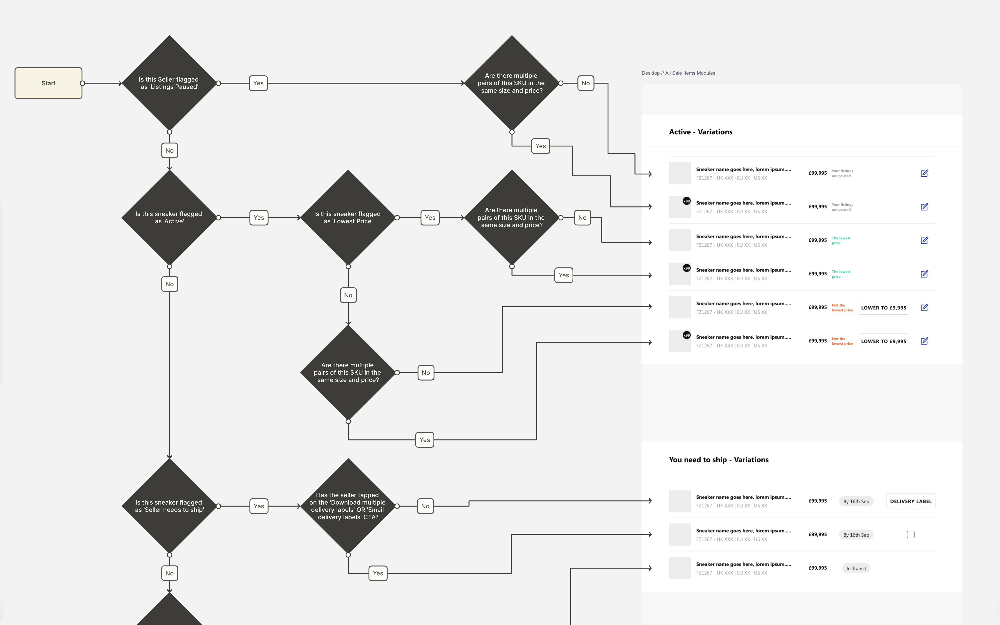
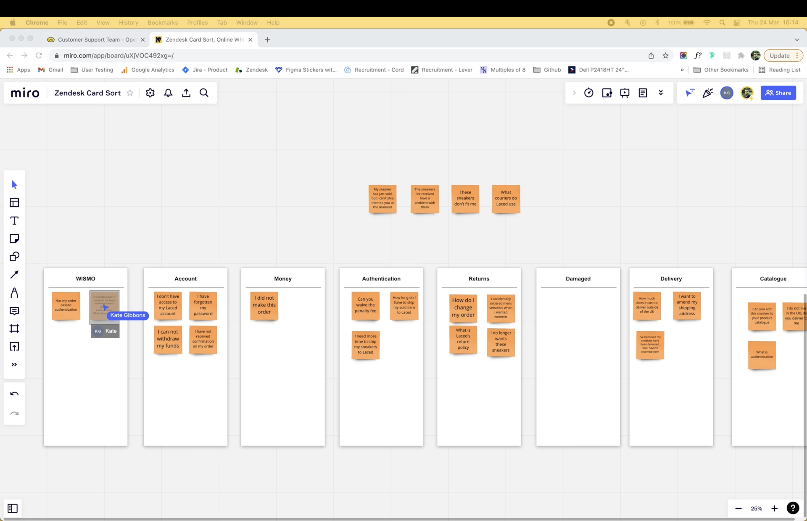
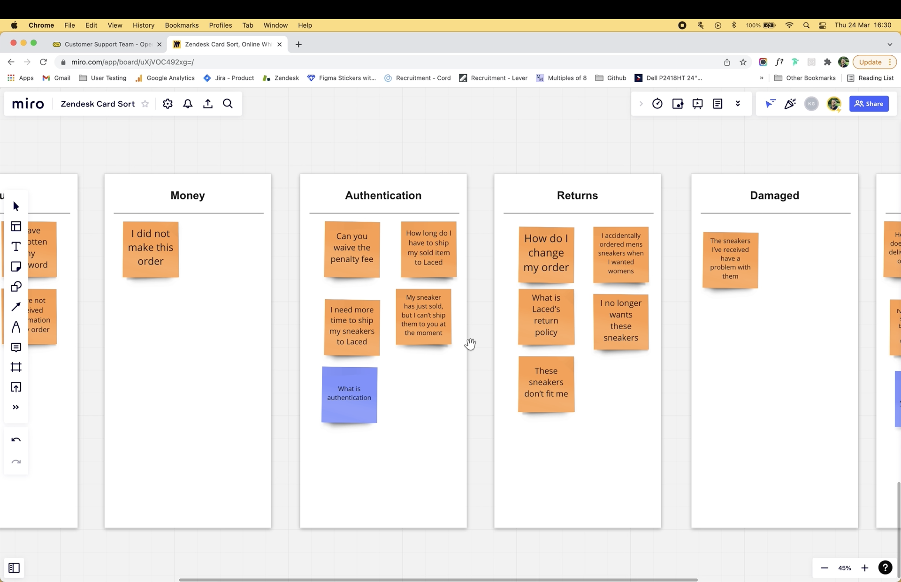
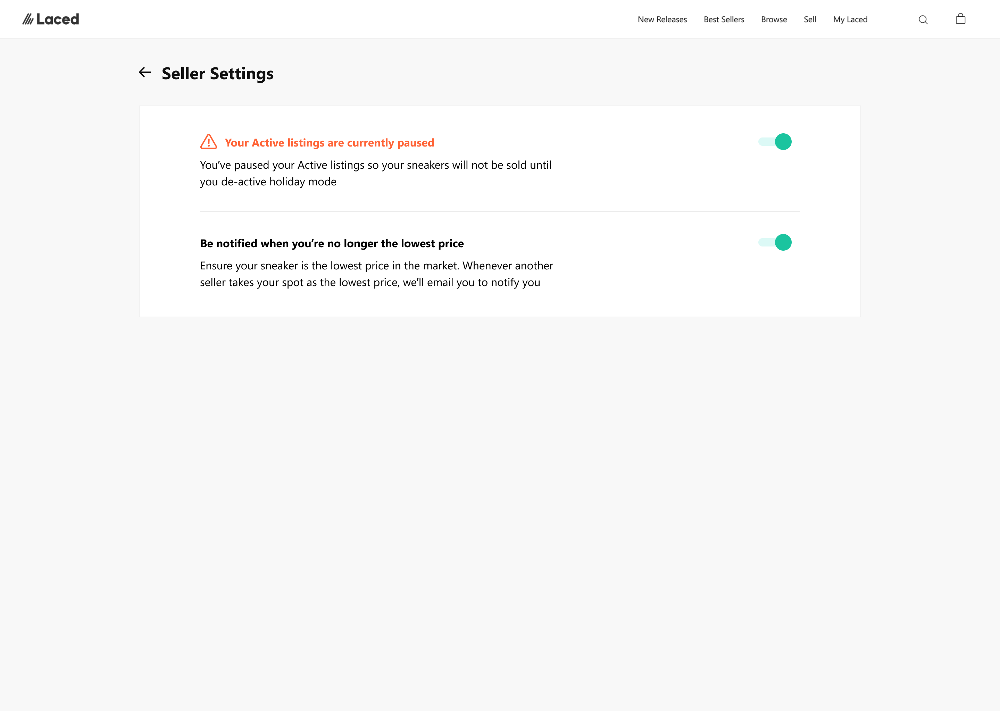
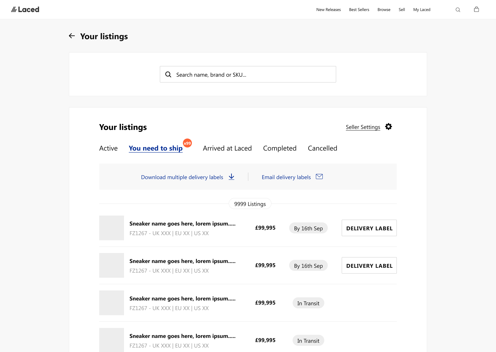
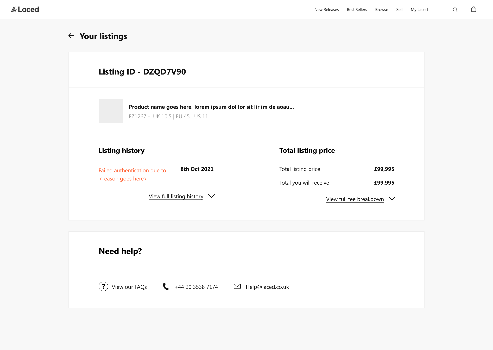

Laced is a high-growth marketplace for rare, limited-release sneakers. Every pair passes through a five-stage warehouse authentication process, with up to 3,000 processed each day and customer support regularly stepping in between buyers and sellers
Support was becoming the bottleneck to growth
Daily sales were growing faster than the support team and tools could handle. Much of the workload came from issues that could have been prevented or self-served earlier in the journey, creating three clear problems.
About 70,000 historical tickets were untagged, leaving the team reliant on anecdotal feedback and making it difficult to build evidence-based cases for improvement.
Customers had little visibility of where their sneaker was in the five-stage authentication process, driving a high volume of avoidable WISMO tickets.
With no weekend support, every week started with a backlog already in place, hurting response times, team morale and customer confidence.
With no historical tagging, nobody could say what customers were actually contacting support about. I interviewed the support team to understand the recurring issues, then manually reviewed and categorised the latest 500 tickets to quantify demand and test those assumptions against real data.
“Most of my day is looking up where a pair is in authentication.”
“Monday is the day nobody wants. You open the queue and it’s already two days deep.”
“We’ve asked for extra cover before but it was always never the right time.”
“If they don’t hear back over the weekend, they assume they’ve been scammed.”
I used open and closed card sorts with the support team to define a clear set of ticket categories in their own language. Where agents disagreed, labels were merged or renamed until the same ticket would be tagged consistently.
The final categories became mandatory in Zendesk, giving the team reliable demand data from that point forward.


I worked with a developer to apply the agreed tags retrospectively to around 70,000 historical tickets using the language customers actually used.
Keyword matching was not perfect, but it created a reliable enough baseline to show the scale of demand by topic and support evidence-based decisions.
The data showed two clear gaps. Sellers had no simple way to manage listings, while buyers had no way to track an order through authentication.
I designed a self-service portal around the same underlying order record, giving each user the information and actions they needed while keeping sensitive operational states internal.



The analysis kept surfacing the same issue. With no weekend cover, a backlog built up every week and the team started Monday already behind.
Previous requests for more staff had been rejected because there was no evidence to quantify the problem. I used the new ticket data to show the scale and operational impact of the backlog, building the case that secured two new weekend support hires.
Every weekend the inbox was unstaffed for 48 hours, resulting in Monday opening ×2.5 heavier than normal.
“We were fighting a never-ending backlog. No matter how hard we worked, the weekend intake meant we could never get ahead.”
With no weekend cover, tickets accumulated for 48 hours and the team started every week already behind.
The weekend gap inflated response times and left the team feeling they could never get ahead.
In a scam-sensitive market, two days without updates led some customers to assume something was wrong and cancel.
Using cancellation rates on orders left without updates, I quantified the revenue lost to the weekend gap and turned a staffing request into a commercial case.
“Tom led the redesign of our internal authentication experience, turning a complex operational flow across multiple teams into clear blueprints that cut authentication times and reduced mistakes. Commercially focused and pragmatic, he balanced great user experience with what the business needed to move quickly. He was also instrumental in scaling our design and engineering capabilities, hiring and mentoring the team and consistently raising the bar, and I trusted him to own major initiatives from concept to delivery.”
“Tom was our inaugural hire within the product team and pivotal in scaling it to over 20 members. Leveraging his expertise we created the first service design blueprints for our warehouse operations, authenticating over 3,000 sneakers daily. What I valued most was his ability to navigate stakeholder relationships and provide clear, valuable insights. Strategically sound, he can go beyond the usual remit and take on the role of an advisor who really impacts an organisation’s efficacy.”
A support operation that reduced avoidable contact, created usable demand data and fixed the weekend backlog.